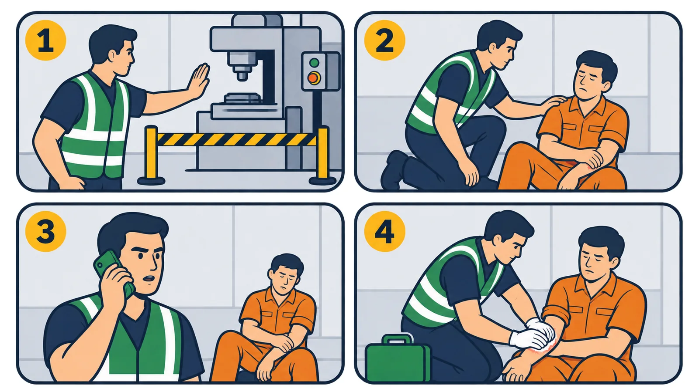
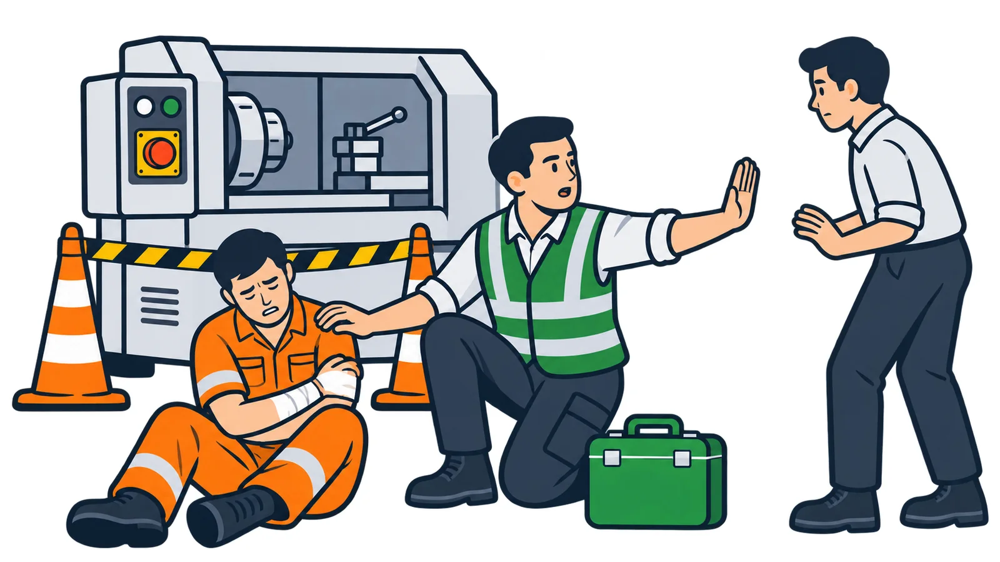
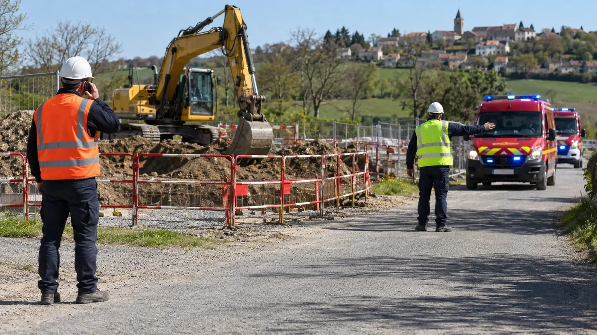
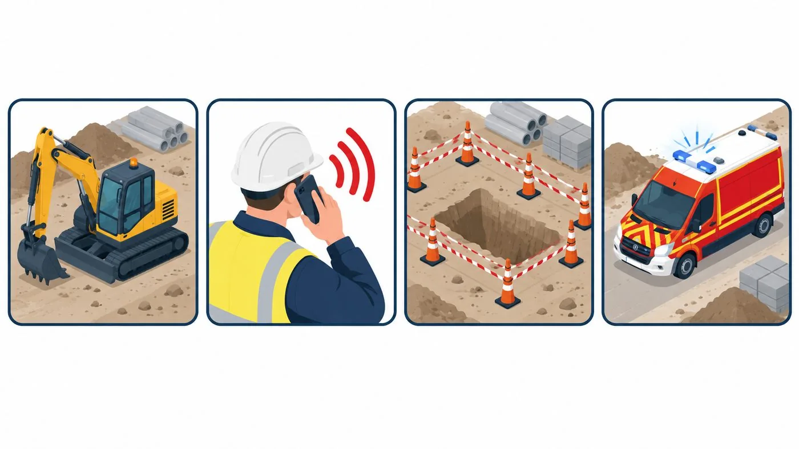
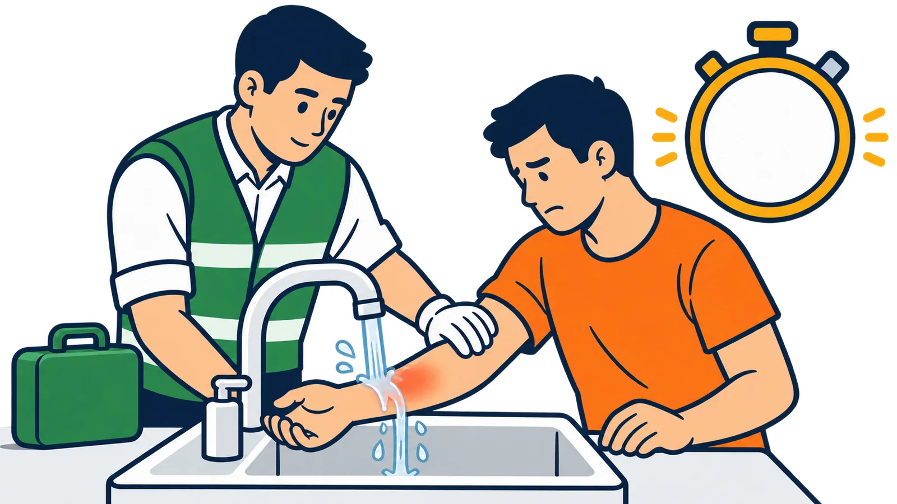
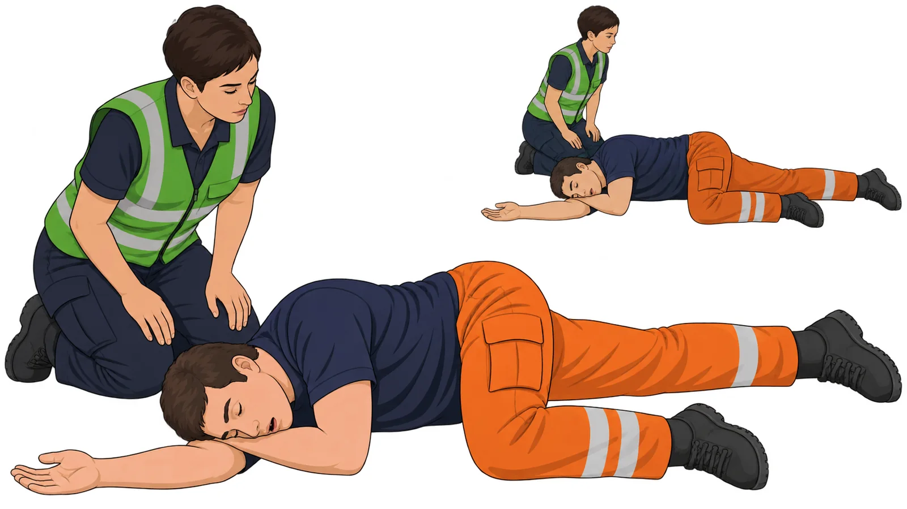
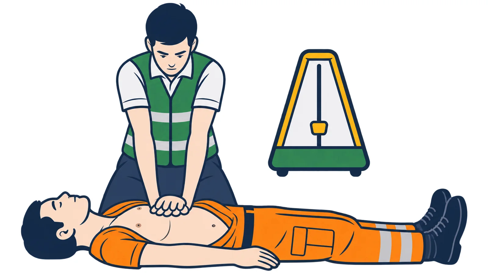
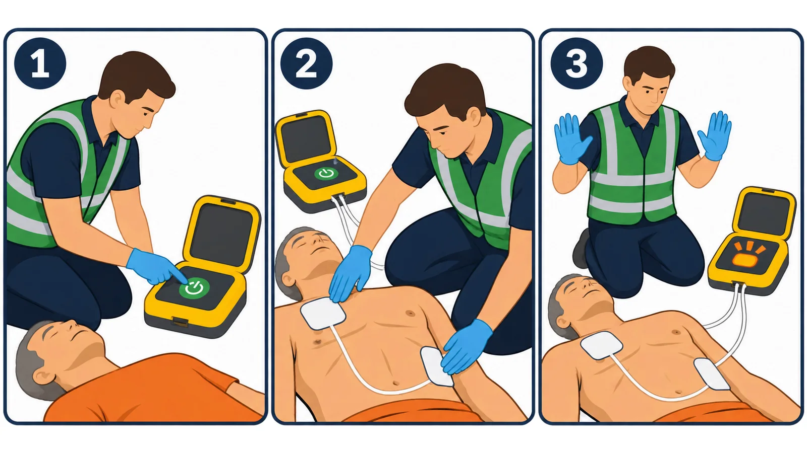
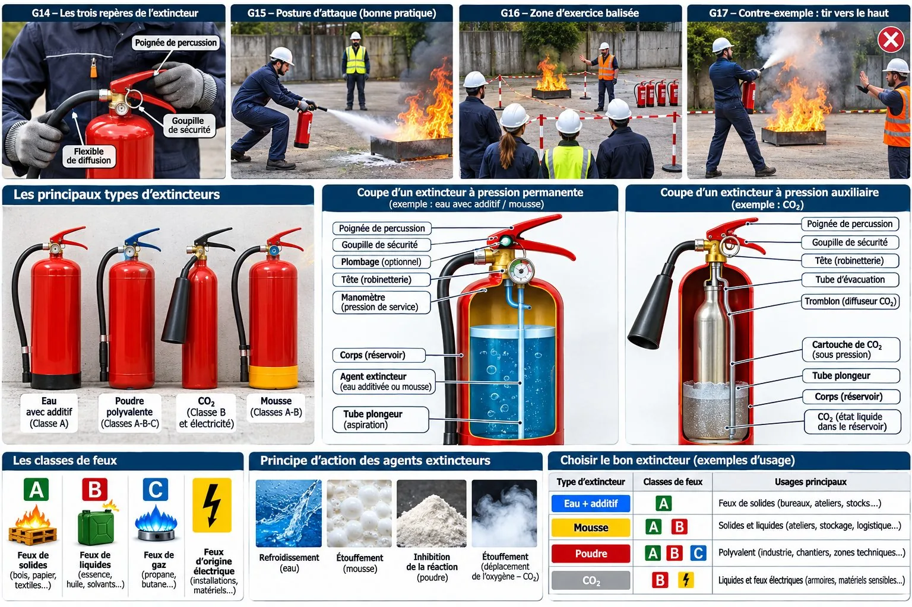

Accident électrique : que faire ?
Quatre mots à retenir : protéger, examiner, alerter, secourir. L’ordre compte : on ne devient pas une seconde victime. Cette page reprend la démarche de la formation Sauveteur Secouriste du Travail (SST) appliquée au risque électrique ; elle ne remplace pas la formation SST.

1 · Protéger
- Couper l’alimentation par l’arrêt d’urgence, la coupure d’urgence ou le disjoncteur, si c’est accessible sans danger.
- Ne jamais toucher une victime encore en contact avec une source sous tension.
- Écarter les personnes, baliser.
- Doute sur la tension, ligne tombée, haute tension : ne pas approcher, faire alerter l’exploitant et les secours, attendre la mise hors tension confirmée.


2 · Examiner
Une fois le danger écarté, rechercher rapidement :
- la conscience : répond-elle, réagit-elle ?
- la respiration ;
- les saignements et les brûlures (entrée et sortie du courant).
Une électrisation, même d’apparence bénigne, justifie un avis médical.

3 · Alerter


Un message clair, en six éléments : qui appelle, où (adresse exacte, accès), quoi (nature de l’accident), combien de victimes, comment elles vont, ce qui est déjà fait (coupure faite ?).
Numéros : 15 (SAMU), 18 (pompiers), 112 (numéro européen). Ne pas raccrocher avant d’y être invité ; envoyer quelqu’un accueillir les secours.

4 · Secourir




- Brûlure : refroidir à l’eau selon la formation SST, après avoir écarté tout danger électrique.
- Inconsciente, elle respire : position latérale de sécurité, surveillance jusqu’à l’arrivée des secours.
- Inconsciente, elle ne respire pas : compressions thoraciques, défibrillateur (DAE) dès qu’il est là, suivre ses instructions.
Incendie d’origine électrique
- Donner l’alarme et faire alerter les secours.
- Couper l’alimentation de l’appareil ou du circuit concerné si cela peut se faire sans danger.
- Éviter l’eau sur une installation sous tension : l’eau peut conduire le courant.
- Utiliser un extincteur adapté seulement si l’on a été formé et si le feu est petit ; sinon, évacuer et fermer portes et fenêtres derrière soi.
- Évacuer selon la consigne de l’établissement vers le point de rassemblement.

Scénario : que faites-vous ?
Choisissez à chaque étape. Il n’y a pas de score : l’intérêt est de comprendre l’ordre.